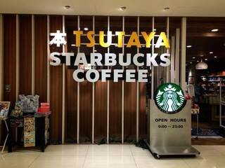
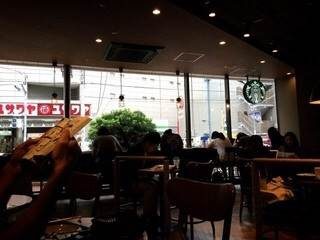
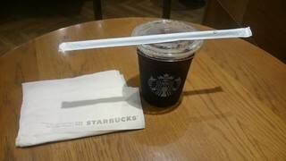

実験用 津田沼周辺カフェ紹介ページ
Starbucks Coffee



[お店の情報]
・営業時間：9時〜23時 ・定休日：なし ・予算：500円 ・コンセント：あり ・Wi-Fi：あり
・特徴：津田沼駅近くモリシア内1Fにあり、TSUTAYAと合体している。 コンセントとWi-Fiがあり、何か作業をするのには最適な場所となっている。 誰もが知っている有名店で、フラペチーノのシリーズは年層選ばず壮大な支持を得ている。
HOME